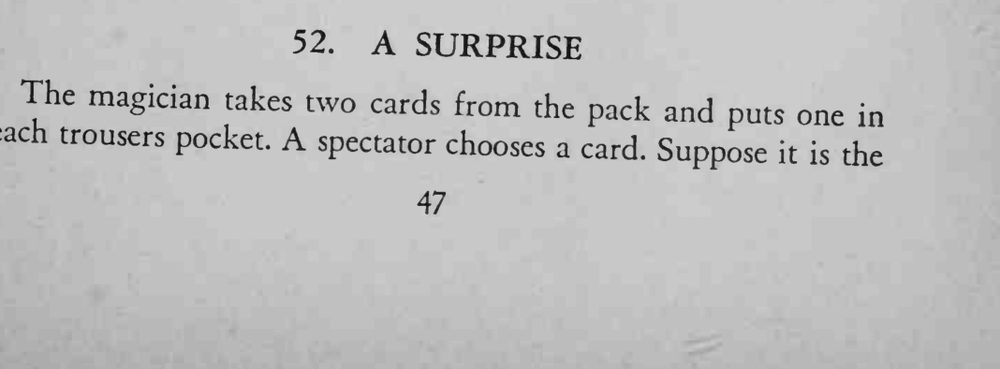
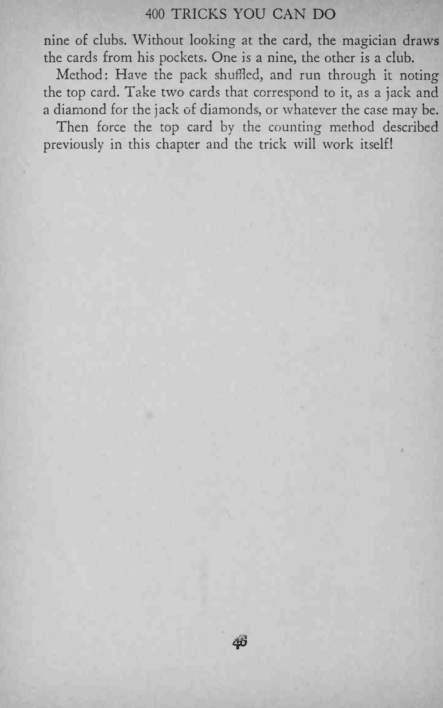
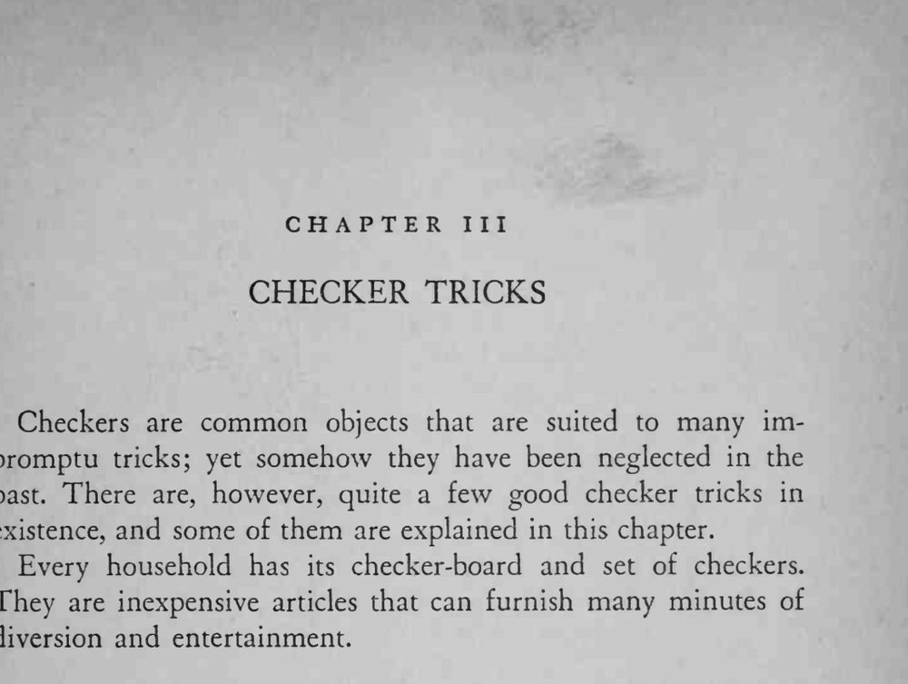

观众选一张牌，魔术师看都不看，从两个裤袋里各抽一张，恰好凑出这张牌的点数与花色。
两张「拆分牌」要提前核对并分放左右口袋，取出时不要低头看。



The magician takes two cards from the pack and puts one each trousers pocket. A in spectator chooses a card. Suppose the it is nine of clubs. Without looking at the card, the magician draws the cards from his pockets. One is a nine, the other is a club. Method: Have the pack shuffled, and run through it noting the top card. Take two cards that correspond to it, as a jack and a diamond for the jack of diamonds, or whatever the case may be. Then force the top card by the counting method described previously in this chapter and the trick will work itself! III Checkers are common objects that are suited to many impromptu tricks; yet somehow they have been neglected in the past. There are, however, quite a few good checker tricks in existence, and some of them are explained in this chapter. Every household has its checker-board and set of checkers. They are inexpensive articles that can furnish many minutes of diversion and entertainment.